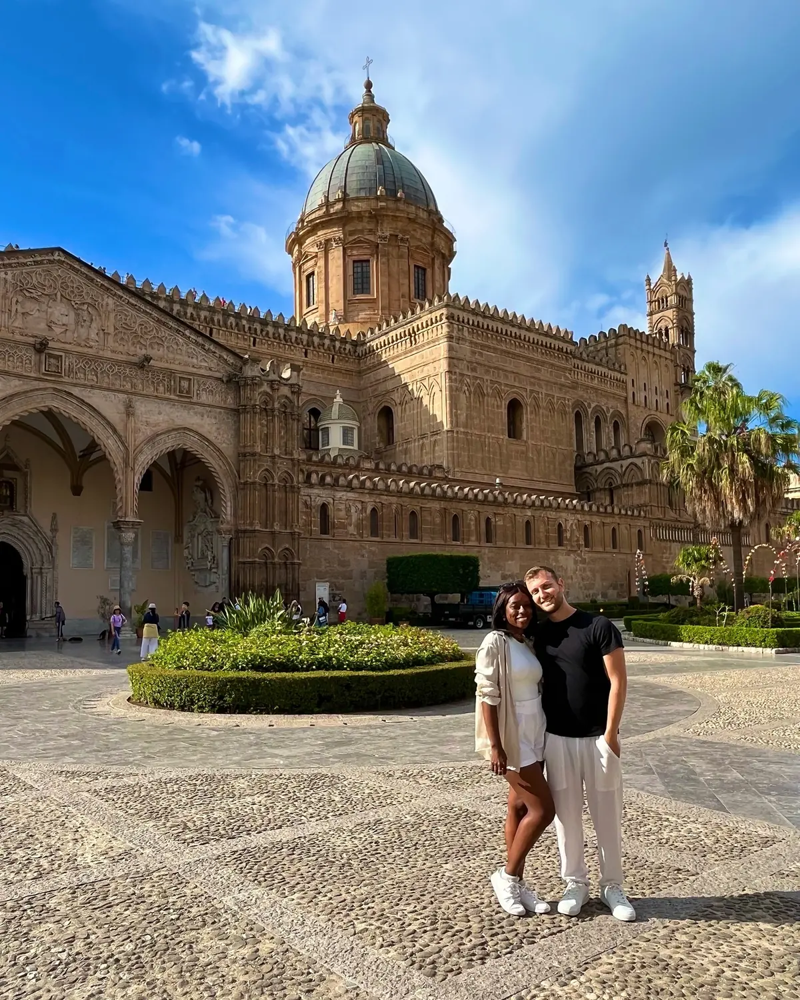
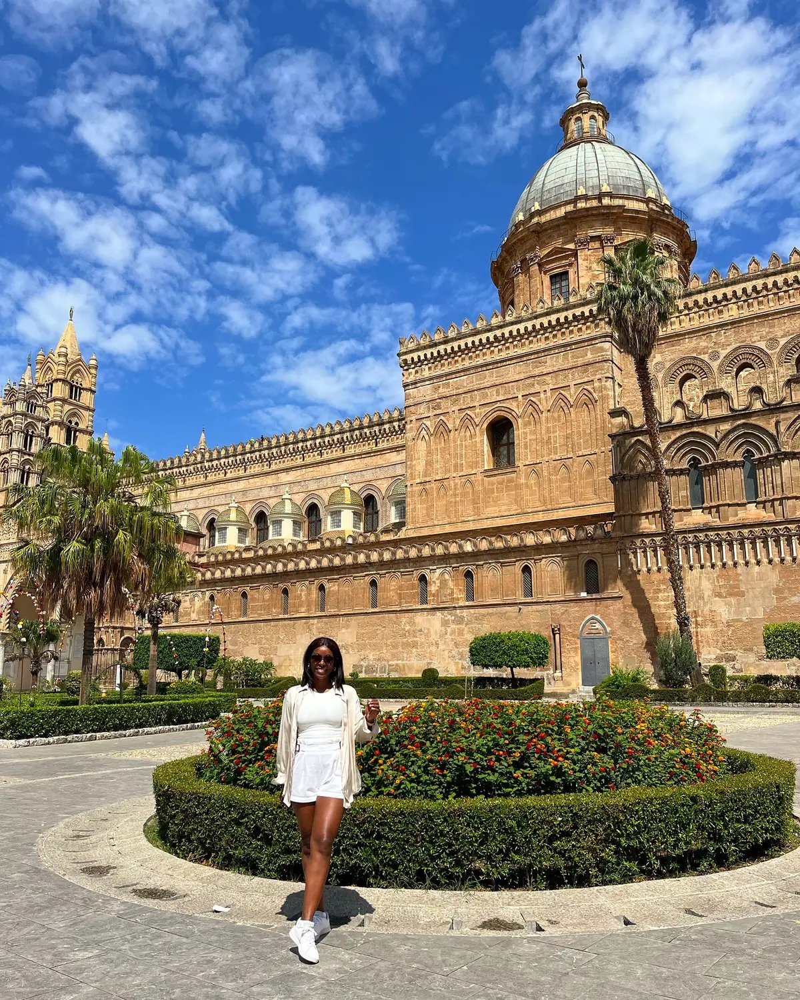
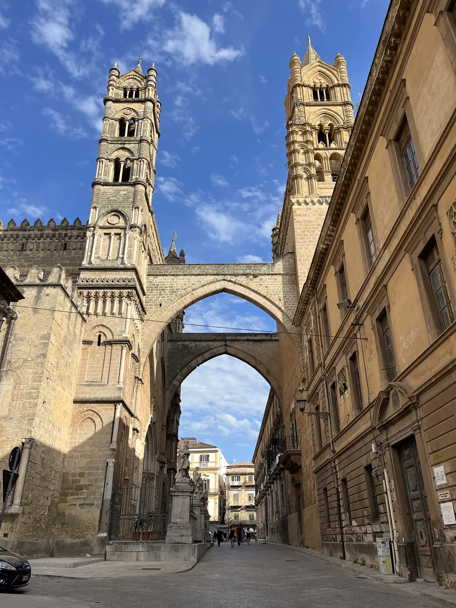

The icon01
Palermo Cathedral
📍 Cattedrale di Palermo, Via Vittorio Emanuele
The Cattedrale di Palermo is the city's showstopper and a perfect snapshot of Sicily's mixed-up history — Norman arches, Arab detailing, a Catalan-Gothic porch and a big Baroque dome, all in warm honey-coloured stone. It's genuinely huge, so the whole square is one long photo op. Go early for softer light and empty gardens, and pay the little extra to climb up to the rooftops for a view over the old town.
Arab-Norman architectureBest in morning light